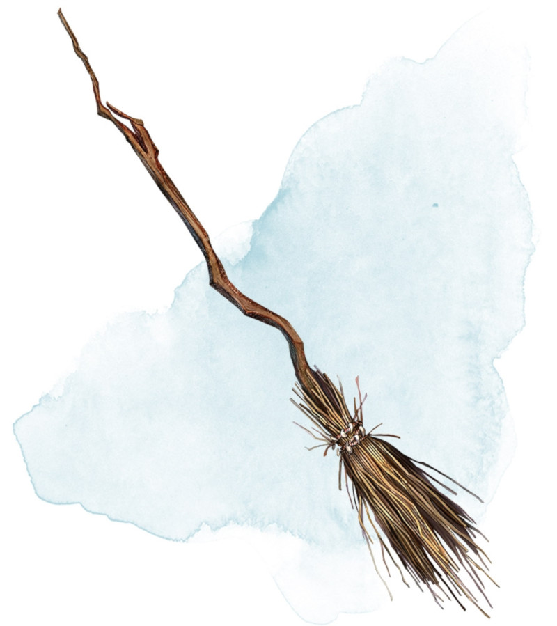

Balai volant
[ Broom of Flying ]
Objet merveilleux, peu commun
Ce balai de bois pèse 1,5 kg et ressemble à un balai normal jusqu'à ce que vous l'enfourchiez à califourchon et prononciez son mot de commande. Il se met alors à planer et peut être chevauché dans les airs. Sa vitesse de vol est de 15 mètres. Il peut porter 200 kg, mais s'il en transporte plus de 100, sa vitesse est limitée à 9 mètres. Le balai cesse de planer une fois que vous atterrissez.
Vous pouvez ordonner au balai de voyager seul vers une destination qui vous est familière et distante de 1,5 kilomètre ou moins en prononçant le mot de commande et en nommant le lieu. Tant que le balai est à 1,5 kilomètre ou moins de vous, vous pouvez le rappeler à vous en prononçant un autre mot de commande.
Vous pouvez ordonner au balai de voyager seul vers une destination qui vous est familière et distante de 1,5 kilomètre ou moins en prononçant le mot de commande et en nommant le lieu. Tant que le balai est à 1,5 kilomètre ou moins de vous, vous pouvez le rappeler à vous en prononçant un autre mot de commande.
Dungeon Master´s Guide (SRD)
